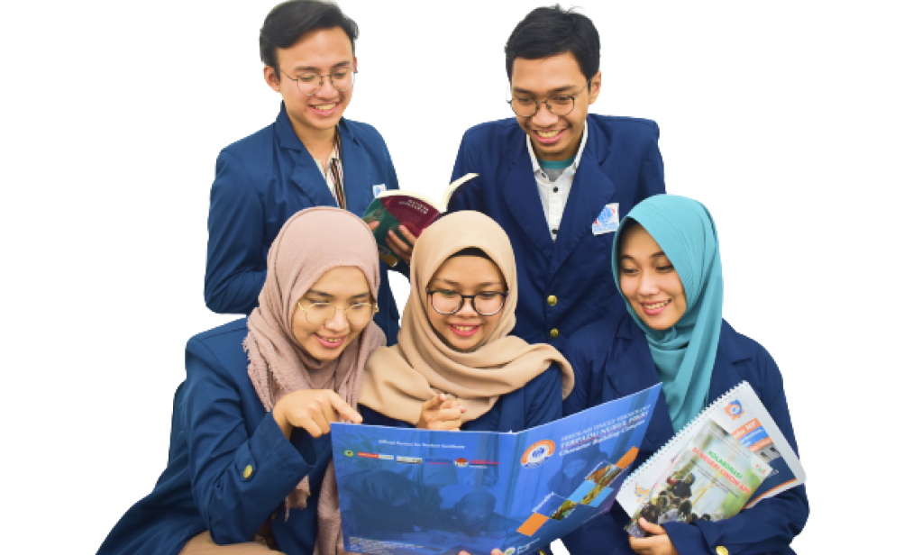
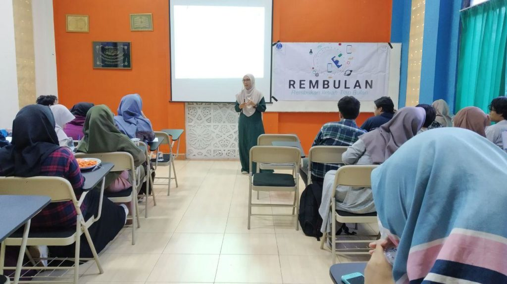
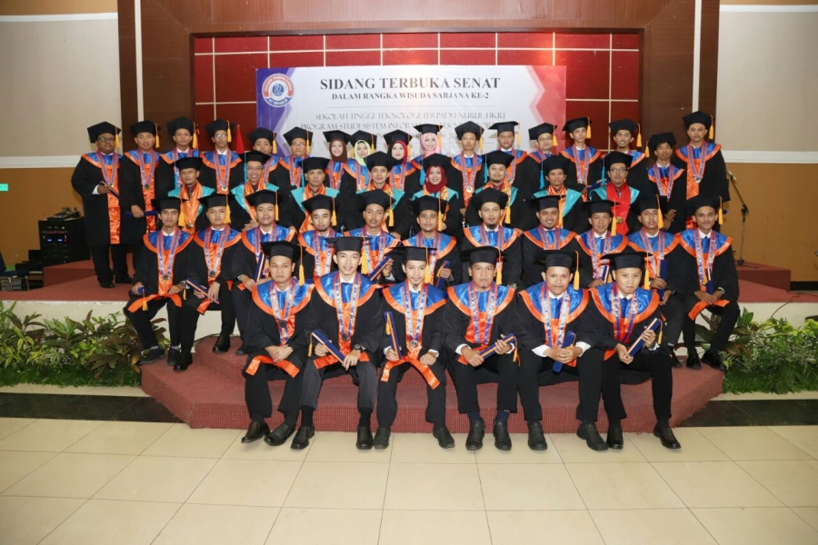

Profil Kampus STT NF




Sekolah Tinggi Teknologi Terpadu Nurul Fikri telah mengadakan Kuliah Umum dengan tema “Teknologi Digital (Peluang, Tantangan, dan Ikhtiar Membersamainya) pada hari Sabtu, 25 Desember 2021 bertempat di Auditorium Kampus B STT-NF secara luring (offline & online) untuk online dapat diakses melalui aplikasi Zoom dan Live Streaming di Youtube STT Terpadu Nurul Fikri.
Program Studi Bisnis Digital merupakan rumpun ilmu terapan yang mengaplikasikan bagaimana proses merancang dan menjalankan bisnis di era Industri 4.0. Ilmu yang diperoleh di program studi ini merupakan perpaduan dari terapan bidang ilmu manajemen, bisnis, sistem informasi, hingga teknik informatika untuk mempersiapkan sumber daya manusia (SDM) yang mampu menjalankan startup teknologi ataupun mentransformasi bisnis konvensional menjadi bisnis digital.